Elementos de una estructura
La mayoría de las estructuras están formadas por la unión de varios elementos. Cada uno de estos elementos está diseñado para soportar distintos tipos de esfuerzos, de modo que el resultado final sea una estructura resistente y estable.
Podemos distinguir:
CIMIENTOS: Todas las estructuras necesitan apoyarse sobre una base resistente, la cual suele estar por debajo del suelo. Transmiten las cargas al terreno, evitando que se hunda la estructura. En función a la resistencia del terreno y al tipo de estructura se utilizan diferentes tipos de cimentación (zapata, losa, pilotaje).
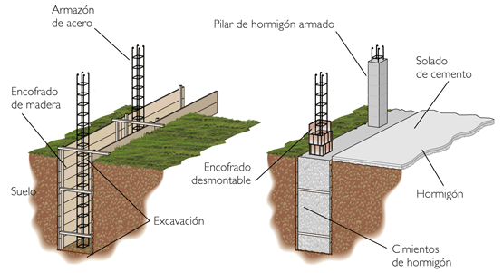 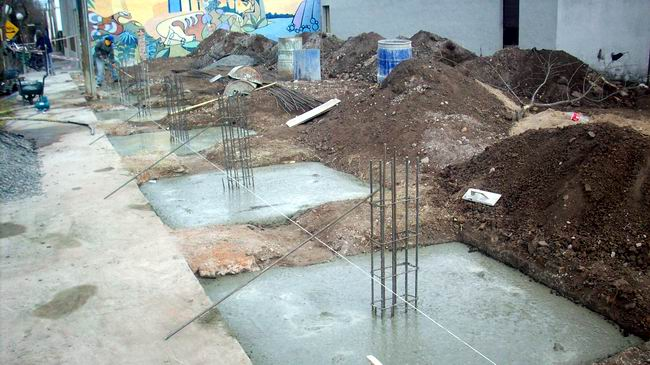
PILARES (o columnas): son elementos verticales especialmente diseñados para soportar esfuerzos de compresión. Según la estructura los tenemos de acero (con perfiles) o de hormigón armado.
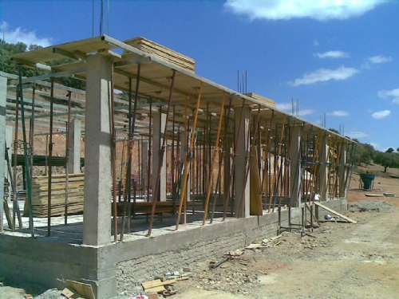 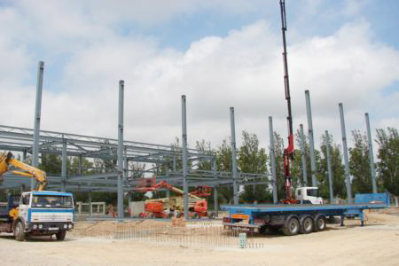
VIGAS: Son elementos horizontales que soportan esfuerzos de flexión. Son las encargadas de transimitir los esfuerzos a los pilares. Según su función o material reciben diferentes nombre (jacena, zuncho, vigueta, cercha).
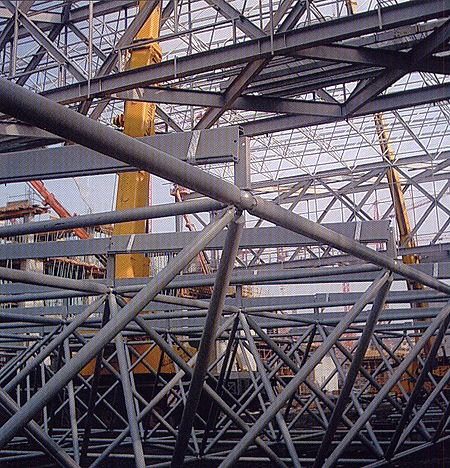 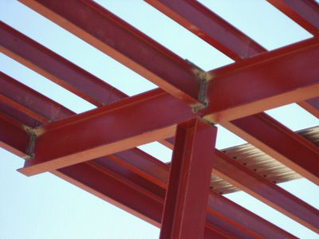 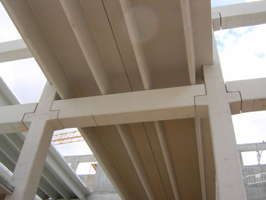
Los pilares y vigas que están en el mismo plano vertical reciben el nombre de pórtico. La unión de diferentes pórticos forma la estructura de un edificio actual.
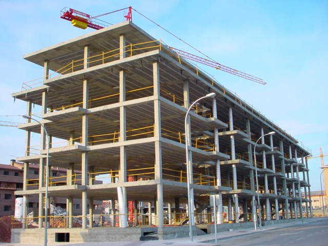 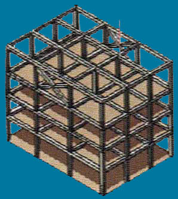
ARCOS: Es un elemento con forma de curva que sirve para cubrir un hueco entre dos pilares y que soporta una parte de la estructura descargando el peso en los extremos.
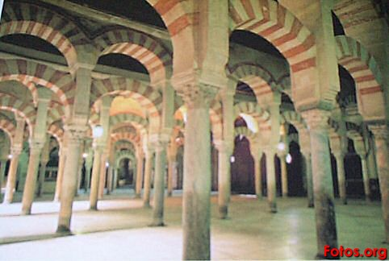 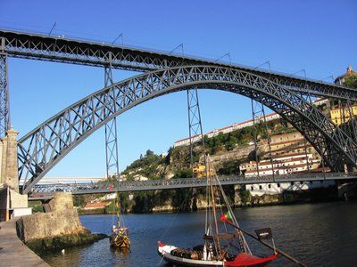
TIRANTES: Son cables o barras que soportan esfuerzos de tracción principalmente. Sirven para aumentar la resistencia y estabilidad de una estructura.
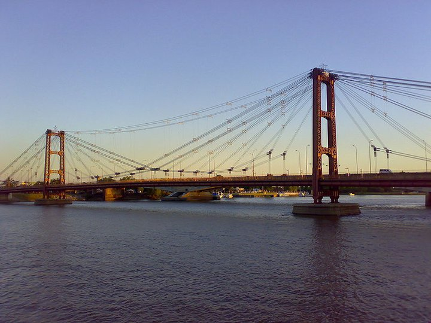 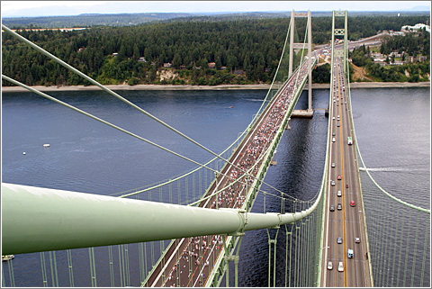
Obra publicada con Licencia Creative Commons Reconocimiento No comercial Sin obra derivada 4.0